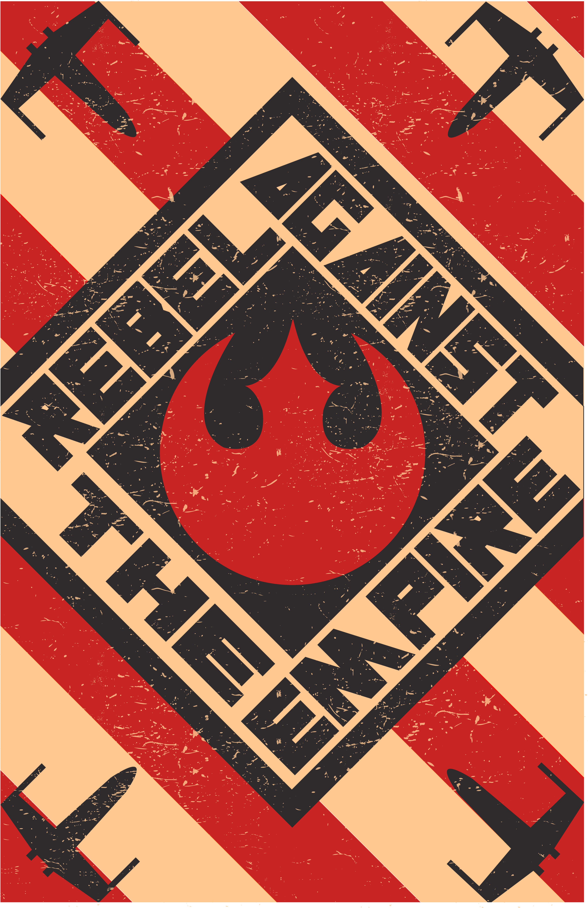

An application to keep track of products and quantities
Keep track of all your contacts as well as add new contacts
Add new fruits, delete fruits, and edit fruits application
Star Wars style inspirational constructivism poster
A website for autograph and toy collectors to share trade and buy vintage toys and search for conventions
A website for a band Beneath the Sky to advertise merch, music and shows with fans.
Fullsail Zoo Commercial using Adobe Premiere
Recorded and edited a radio broadcast
Logo for Kentucky Lawn and Leaf
Using turn.js to create a flippable web magazine.